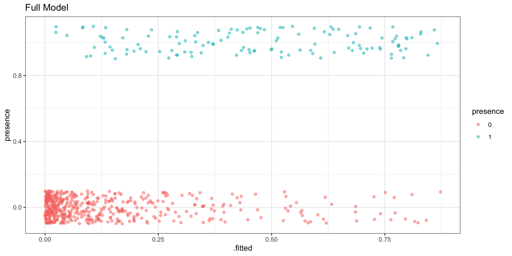
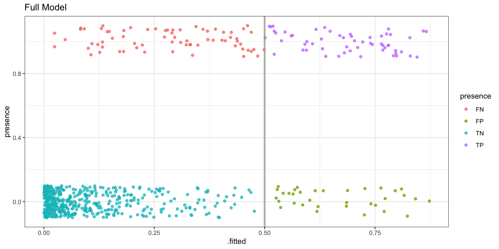
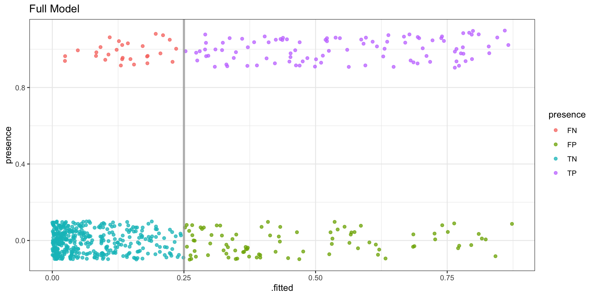
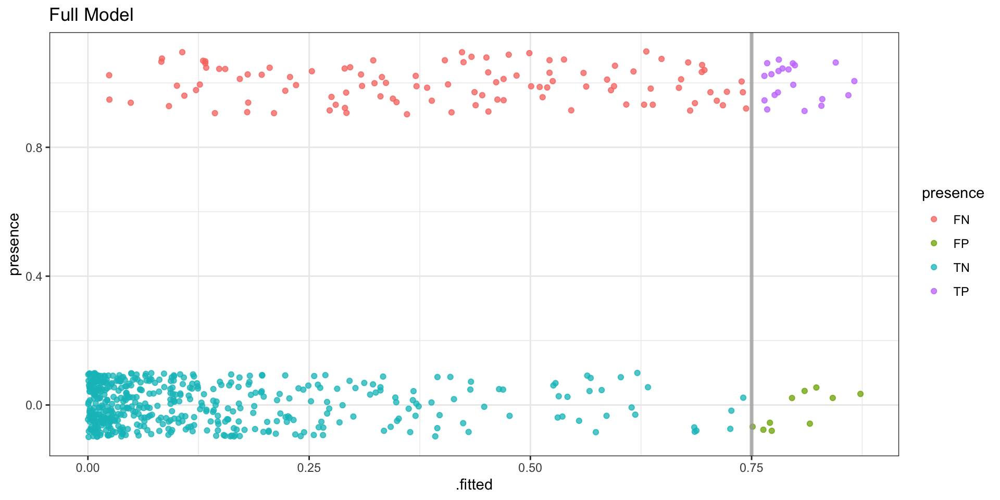
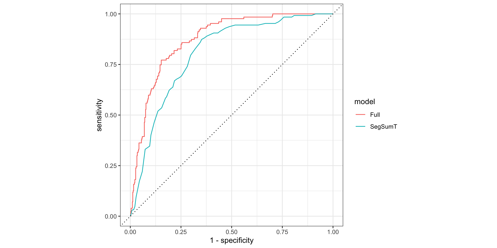
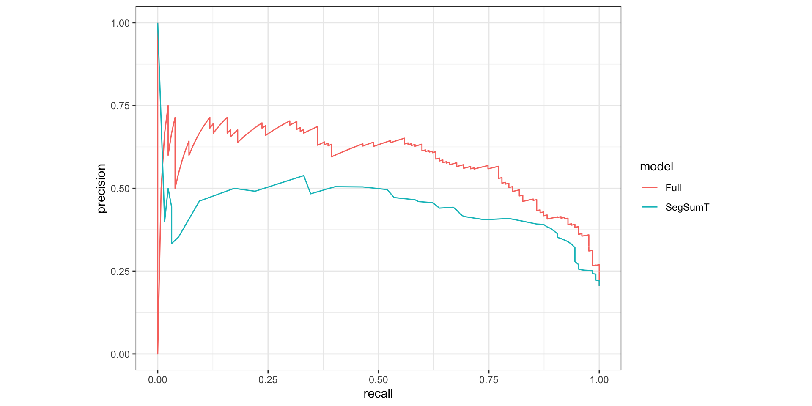
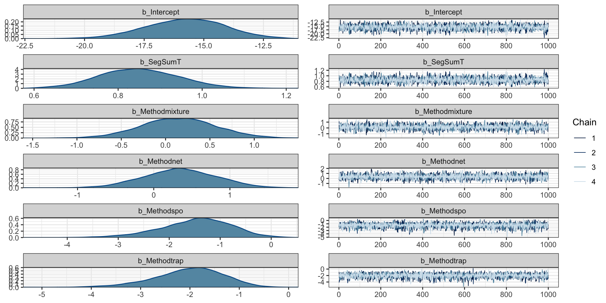
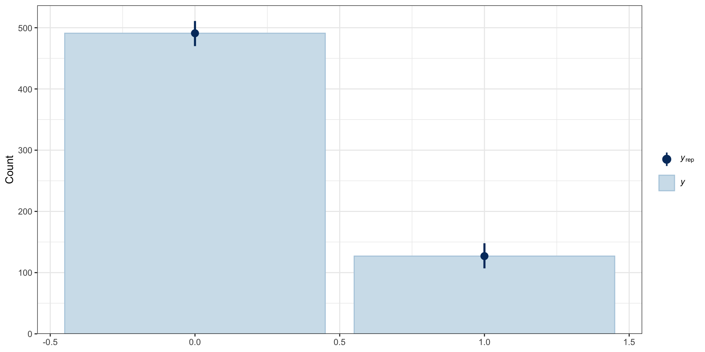

Call:
glm(formula = presence ~ ., family = binomial, data = anguilla_train)
Deviance Residuals:
Min 1Q Median 3Q Max
-2.03162 -0.55711 -0.27105 -0.08103 2.73104
Coefficients:
Estimate Std. Error z value Pr(>|z|)
(Intercept) -9.352885 1.761202 -5.311 1.09e-07 ***
SegSumT 0.654186 0.096921 6.750 1.48e-11 ***
DSDist -0.004837 0.002302 -2.102 0.03559 *
DSMaxSlope -0.030776 0.061995 -0.496 0.61959
USRainDays -0.710920 0.225814 -3.148 0.00164 **
USSlope -0.069814 0.025443 -2.744 0.00607 **
USNative -0.456598 0.455261 -1.003 0.31589
DSDam -1.095360 0.516960 -2.119 0.03410 *
Methodmixture -0.430351 0.475411 -0.905 0.36535
Methodnet -0.066214 0.559162 -0.118 0.90574
Methodspo -1.583905 0.701902 -2.257 0.02403 *
Methodtrap -2.958398 0.688146 -4.299 1.72e-05 ***
LocSed -0.140495 0.096849 -1.451 0.14688
---
Signif. codes: 0 '***' 0.001 '**' 0.01 '*' 0.05 '.' 0.1 ' ' 1
(Dispersion parameter for binomial family taken to be 1)
Null deviance: 627.81 on 617 degrees of freedom
Residual deviance: 426.96 on 605 degrees of freedom
AIC: 452.96
Number of Fisher Scoring iterations: 6Logistic Regression (cont.)
Lecture 06
Dr. Colin Rundel
Full Model
Model
Separation
Residuals vs fitted
Residuals (binned) vs fitted
Model Performance
Confusion Matrix
Confusion Matrix - 50% threshold

# A tibble: 4 × 2
result n
<chr> <int>
1 FN 70
2 FP 34
3 TN 457
4 TP 57Confusion Matrix - 25% threshold

# A tibble: 4 × 2
result n
<chr> <int>
1 FN 28
2 FP 88
3 TN 403
4 TP 99Confusion Matrix - 75% threshold

# A tibble: 4 × 2
result n
<chr> <int>
1 FN 107
2 FP 10
3 TN 481
4 TP 20Confusion Matrix statistics
\[ \begin{aligned} \text{Sensitivity} = \text{Recall} &= TPR = \frac{TP}{TP+FN} = 1 - FNR\\\\ \text{Specificity} &= TNR = \frac{TN}{TN+FP} = 1 - FPR \\\\ \text{Precision} &= PPV = \frac{TP}{TP+FP} \\\\ F_1 &= \frac{2TP}{2TP + FP + FN} \\\\ \text{Accuracy} &= \frac{TP+TN}{TP+TN+FP+FN} \end{aligned} \]
Combining model predictions
( model_comb = bind_rows(
g_std |> mutate(model = "SegSumT"),
f_std |> mutate(model = "Full")
) |>
group_by(model)
)# A tibble: 1,236 × 17
# Groups: model [2]
presence SegSumT .fitted .resid .std.r…¹ .hat .sigma .cooksd model DSDist
<int> <dbl> <dbl> <dbl> <dbl> <dbl> <dbl> <dbl> <chr> <dbl>
1 0 16.4 0.131 -0.131 -0.530 0.00260 0.903 1.97e-4 SegS… NA
2 1 17.1 0.209 0.791 1.77 0.00232 0.901 4.43e-3 SegS… NA
3 0 14 0.0216 -0.0216 -0.209 0.00231 0.903 2.56e-5 SegS… NA
4 0 18.2 0.389 -0.389 -0.994 0.00364 0.903 1.17e-3 SegS… NA
5 0 15.6 0.0735 -0.0735 -0.391 0.00286 0.903 1.14e-4 SegS… NA
6 0 18.3 0.408 -0.408 -1.03 0.00395 0.902 1.37e-3 SegS… NA
7 0 18.5 0.447 -0.447 -1.09 0.00466 0.902 1.90e-3 SegS… NA
8 0 16.2 0.114 -0.114 -0.492 0.00270 0.903 1.74e-4 SegS… NA
9 0 18 0.351 -0.351 -0.932 0.00313 0.903 8.53e-4 SegS… NA
10 1 17.3 0.236 0.764 1.70 0.00233 0.901 3.79e-3 SegS… NA
# … with 1,226 more rows, 7 more variables: DSMaxSlope <dbl>, USRainDays <dbl>,
# USSlope <dbl>, USNative <dbl>, DSDam <int>, Method <fct>, LocSed <dbl>, and
# abbreviated variable name ¹.std.residReceiver operating characteristic (ROC)
\[ \begin{aligned} \text{Sensitivity} = \frac{TP}{TP+FN} \qquad\qquad \text{Specificity} = \frac{TN}{TN+FP} \end{aligned} \]
# A tibble: 696 × 4
# Groups: model [2]
model .threshold specificity sensitivity
<chr> <dbl> <dbl> <dbl>
1 Full -Inf 0 1
2 Full 0.000132 0 1
3 Full 0.000425 0.00204 1
4 Full 0.000453 0.00407 1
5 Full 0.000755 0.00611 1
6 Full 0.000761 0.00815 1
7 Full 0.000792 0.0102 1
8 Full 0.00108 0.0122 1
9 Full 0.00126 0.0143 1
10 Full 0.00146 0.0163 1
# … with 686 more rowsROC Curve
AUC (area under the curve)
# A tibble: 2 × 4
model .metric .estimator .estimate
<chr> <chr> <chr> <dbl>
1 Full roc_auc binary 0.875
2 SegSumT roc_auc binary 0.806A model that randomly assigns classes to the data is expected to achieve an AUC of 0.5 (dotted line on the previous plot) while a perfect model would achieve an AUC of 1.
Precision / Recall
\[ \begin{aligned} \text{Precision} = \frac{TP}{TP+FP} \qquad\qquad \text{Recall} = \frac{TP}{TP+FN} \end{aligned} \]
# A tibble: 694 × 4
# Groups: model [2]
model .threshold recall precision
<chr> <dbl> <dbl> <dbl>
1 Full Inf 0 1
2 Full 0.873 0 0
3 Full 0.866 0.00787 0.5
4 Full 0.859 0.0157 0.667
5 Full 0.845 0.0236 0.75
6 Full 0.842 0.0236 0.6
7 Full 0.830 0.0315 0.667
8 Full 0.829 0.0394 0.714
9 Full 0.823 0.0394 0.625
10 Full 0.816 0.0394 0.556
# … with 684 more rowsPrecision Recall curve
Precision Recall auc
# A tibble: 2 × 4
model .metric .estimator .estimate
<chr> <chr> <chr> <dbl>
1 Full pr_auc binary 0.583
2 SegSumT pr_auc binary 0.447A model that randomly assigns classes to the data is expected to achieve an PR-AUC of # successes / n while a perfect model would achieve an AUC of 1 (a point at a coordinate of (1,1)).
What about the test data?
Combining predicitons
(model_comb = bind_rows(
broom::augment(g, newdata=anguilla_train, type.predict="response") |>
mutate(model = "SegSumT (train)"),
broom::augment(g, newdata=anguilla_test, type.predict="response") |>
mutate(model = "SegSumT (test)"),
broom::augment(f, newdata=anguilla_train, type.predict="response") |>
mutate(model = "Full (train)"),
broom::augment(f, newdata=anguilla_test, type.predict="response") |>
mutate(model = "Full (test)"),
) |>
group_by(model)
)# A tibble: 1,648 × 12
# Groups: model [4]
presence SegSumT DSDist DSMaxSl…¹ USRai…² USSlope USNat…³ DSDam Method LocSed
<int> <dbl> <dbl> <dbl> <dbl> <dbl> <dbl> <int> <fct> <dbl>
1 0 16.4 97.8 6.28 1.51 24.6 0.81 0 elect… 4.5
2 1 17.1 13.9 0.57 1.98 3.3 0.13 0 net 1.8
3 0 14 1.84 0.57 0.29 10.1 0.37 0 elect… 4.7
4 0 18.2 121. 0.57 0.894 1.1 0.02 0 trap 2
5 0 15.6 55.1 5.14 3.3 27.6 0.98 0 elect… 5.4
6 0 18.3 107. 0.57 0.85 1.1 0 0 trap 2.4
7 0 18.5 81.5 2.29 1.26 22.8 0.94 0 elect… 5.2
8 0 16.2 272. 3.43 0.56 27.2 0.95 1 elect… 3.4
9 0 18 24.4 0.17 0.601 19.5 0.16 0 elect… 1.2
10 1 17.3 11.9 0.57 2.14 3.9 0.04 0 elect… 4.3
# … with 1,638 more rows, 2 more variables: .fitted <dbl>, model <chr>, and
# abbreviated variable names ¹DSMaxSlope, ²USRainDays, ³USNativeSeparation
ROC
AUC
# A tibble: 4 × 4
model .metric .estimator .estimate
<chr> <chr> <chr> <dbl>
1 Full (test) roc_auc binary 0.831
2 Full (train) roc_auc binary 0.875
3 SegSumT (test) roc_auc binary 0.796
4 SegSumT (train) roc_auc binary 0.806Precision / Recall
PR-AUC
Aside: Species Distribution Modeling
Model Choice
We have been fitting a model that looks like the following,
\[ \begin{aligned} y_i &\sim \text{Bern}(p_i) \\\\ \text{logit}(p_i) &= \boldsymbol{X}_{i\cdot} \boldsymbol{\beta} \end{aligned} \]
Interpretation of \(y_i\) and \(p_i\)?
Absence of evidence …
If we observe a species at a particular location what does that tell us?
If we don’t observe a species at a particular location what does that tell us?

Revised Model
If we allow for crypsis, then
\[ \begin{aligned} y_i &\sim \text{Bern}(q_i \, z_i) \\ z_i &\sim \text{Bern}(p_i) \end{aligned} \] \[ \begin{aligned} \text{logit}(q_i) &= \boldsymbol{X^\star}_{i\cdot} \boldsymbol{\gamma} \\ \text{logit}(p_i) &= \boldsymbol{X}_{i\cdot} \boldsymbol{\beta} \end{aligned} \]
How should we interpret the parameters / variables: \(y_i\), \(z_i\), \(p_i\), and \(q_i\)?
Bayesian Model
brms + logistic regression
Family: bernoulli
Links: mu = logit
Formula: presence ~ SegSumT + Method
Data: anguilla_train (Number of observations: 618)
Draws: 4 chains, each with iter = 2000; warmup = 1000; thin = 1;
total post-warmup draws = 4000
Population-Level Effects:
Estimate Est.Error l-95% CI u-95% CI Rhat Bulk_ESS Tail_ESS
Intercept -15.78 1.65 -19.12 -12.65 1.00 3079 2834
SegSumT 0.85 0.09 0.67 1.04 1.00 3104 2900
Methodmixture 0.14 0.42 -0.69 0.97 1.00 4577 3059
Methodnet 0.35 0.48 -0.59 1.26 1.00 5001 3143
Methodspo -1.48 0.70 -3.02 -0.24 1.00 4942 2587
Methodtrap -2.02 0.70 -3.57 -0.79 1.00 4098 2657
Draws were sampled using sampling(NUTS). For each parameter, Bulk_ESS
and Tail_ESS are effective sample size measures, and Rhat is the potential
scale reduction factor on split chains (at convergence, Rhat = 1).Diagnostics
PP checks

PP check - bars
Gathering parameters
# A tibble: 24,000 × 5
# Groups: .variable [6]
.chain .iteration .draw .variable .value
<int> <int> <int> <chr> <dbl>
1 1 1 1 b_Intercept -17.3
2 1 2 2 b_Intercept -15.6
3 1 3 3 b_Intercept -16.9
4 1 4 4 b_Intercept -17.0
5 1 5 5 b_Intercept -14.4
6 1 6 6 b_Intercept -18.0
7 1 7 7 b_Intercept -11.1
8 1 8 8 b_Intercept -15.2
9 1 9 9 b_Intercept -16.3
10 1 10 10 b_Intercept -14.7
# … with 23,990 more rowsCaterpillar plot
Posterior predictive
( b_pred = b |>
predicted_draws_fix(newdata = anguilla_train) |>
select(presence, .row:.prediction) |>
mutate( # Fix for yardstick
presence = factor(presence, levels=c(1,0)),
.prediction = factor(.prediction, levels=c(1,0))
)
)# A tibble: 2,472,000 × 6
presence .row .chain .iteration .draw .prediction
<fct> <int> <int> <int> <int> <fct>
1 0 1 1 1 1 0
2 0 1 1 2 2 0
3 0 1 1 3 3 1
4 0 1 1 4 4 0
5 0 1 1 5 5 0
6 0 1 1 6 6 0
7 0 1 1 7 7 0
8 0 1 1 8 8 0
9 0 1 1 9 9 0
10 0 1 1 10 10 0
# … with 2,471,990 more rowsPosterior Accuracy
Posterior Sensitivity
Posterior Specificity
Expected posterior predictive
( b_epred = b |>
epred_draws_fix(newdata = anguilla_train) |>
select(presence, .row:.epred) |>
mutate( # Fix for yardstick
presence = factor(presence, levels=c(1,0))
)
)# A tibble: 2,472,000 × 6
presence .row .chain .iteration .draw .epred
<fct> <int> <int> <int> <int> <dbl>
1 0 1 1 1 1 0.119
2 0 1 1 2 2 0.143
3 0 1 1 3 3 0.126
4 0 1 1 4 4 0.127
5 0 1 1 5 5 0.142
6 0 1 1 6 6 0.126
7 0 1 1 7 7 0.175
8 0 1 1 8 8 0.160
9 0 1 1 9 9 0.128
10 0 1 1 10 10 0.151
# … with 2,471,990 more rowsPosterior AUC
Posterior PR-AUC
Expected posterior predictive - test
Comparing AUC / PR-AUC
b_comb |>
group_by(.chain, .iteration, data) |>
summarize(
auc = yardstick::roc_auc_vec(presence, .epred),
pr_auc = yardstick::pr_auc_vec(presence, .epred)
) |>
pivot_longer(cols = auc:pr_auc, names_to = "stat", values_to = "value") |>
ggplot(aes(x = value, y=data)) +
tidybayes::stat_halfeye() +
facet_wrap(~stat, ncol=1, scales = "free_x")
Sta 344 - Fall 2022